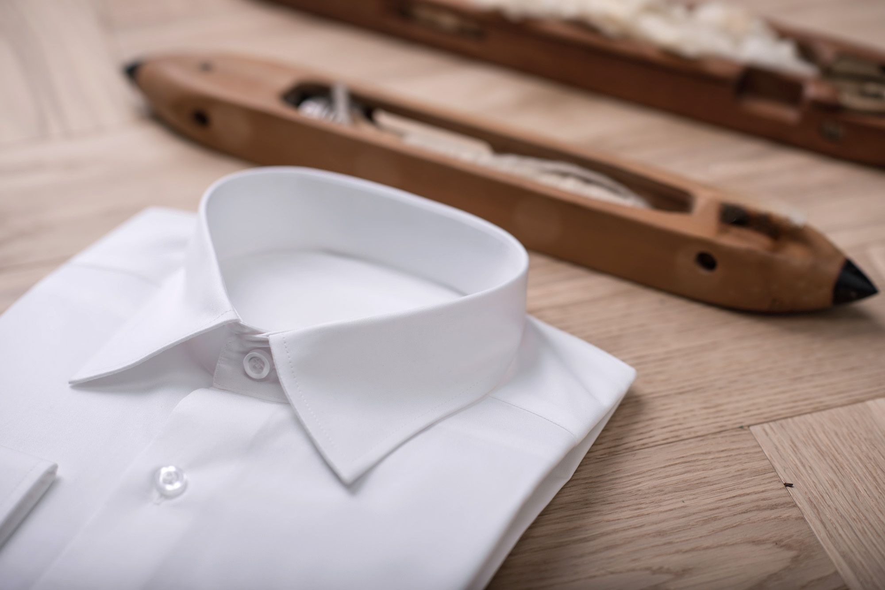
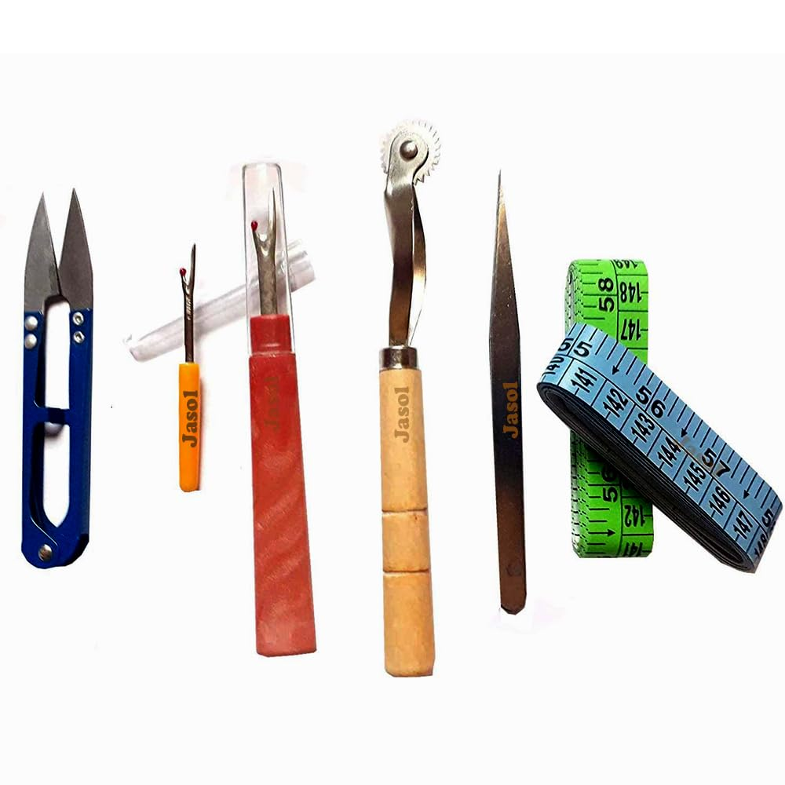

Våre Tjenester
Profesjonell skreddersøm og reparasjon med over 25 års erfaring
Målsøm av Dresser
Vi skreddersyr elegante dresser etter dine unike mål og preferanser. Gjennom en grundig prosess garanterer vi en perfekt passform og stil som passer din personlighet og anledning.
Vår Prosess:
Konsultasjon
Diskuter dine preferanser og behov med våre erfarne skreddere.
Måltaking
Nøyaktig måltaking av kroppsmål for en skreddersydd passform.
Designvalg
Velg stoff, snitt og detaljer som passer din personlige stil.
Prøving og tilpasning
Prøv og tilpass dressen for perfekt passform og komfort.
Priser fra:

Endringer og Reparasjon
Vi tilbyr endringer og reparasjoner av klær for å sikre at dine plagg passer perfekt og varer lengre. Våre erfarne skreddere tar seg av alt fra enkle til mer komplekse justeringer.
Lengdejusteringer
Bukser, skjørt og ermer
Vidde-endringer
Inn- og uttak av plagg
Reparasjoner
Rifter, hull og slitasje
Utskiftinger
Glidelåser og knapper
Priser fra:
Omforming av Plagg
Gi nytt liv til gamle plagg ved å omforme dem til trendy og moderne design. Våre dyktige skreddere kan gi råd og utføre omformingstjenester for å oppgradere ditt klesskap.
Gammel dress → Moderne blazer
Lang kjole → Trendy topp
Stor skjorte → Tilpasset passform
Priser:
Priser vurderes individuelt basert på kompleksitet og ønsket resultat. Kontakt oss for et gratis tilbud.

Skjorter & Bluser
La oss skape skreddersydde skjorter og bluser som passer perfekt til din kropp og stil. Våre erfarne skreddere vil veilede deg gjennom valg av stoff, mønster og detaljer.
Priser fra:

Skomakeri
Vi utfører alle typer skoreparasjoner - enten det gjelder skinnsko eller andre typer materialer. Kom gjerne innom for en hyggelig prat!
Sålereparasjon
Utskifting og reparasjon av såler på alle typer sko
Hælreparasjon
Reparasjon og utskifting av hæler på både dame- og herresko
Skinnreparasjon
Reparasjon av rifter og skader på skinnsko
Glidelåsreparasjon
Utskifting og reparasjon av glidelåser på støvler
Priser fra:

Spesialbestillinger
Har du et spesielt ønske eller en unik idé? Vi tar gjerne imot utfordrende prosjekter og spesialbestillinger. Kontakt oss for å diskutere dine behov.
Bryllupsklær
Skreddersydde brudekjoler og brudesvitesdrakter
Kostymer
Teater, film og spesielle anledninger
Uniformer
Profesjonelle og seremonielle uniformer
Designsamarbeid
Samarbeid med designere og motemerker

Vår Arbeidsmetode
Fra første møte til ferdig resultat
Konsultasjon
Vi starter med en grundig samtale om dine ønsker og behov
Planlegging
Detaljert planlegging av prosjektet med tidsramme og kostnader
Utførelse
Profesjonell utførelse med høyeste kvalitet og presisjon
Levering
Ferdig resultat som overgår dine forventninger
Klar for å starte ditt prosjekt?
Kontakt oss i dag for et gratis og uforpliktende tilbud på våre tjenester.